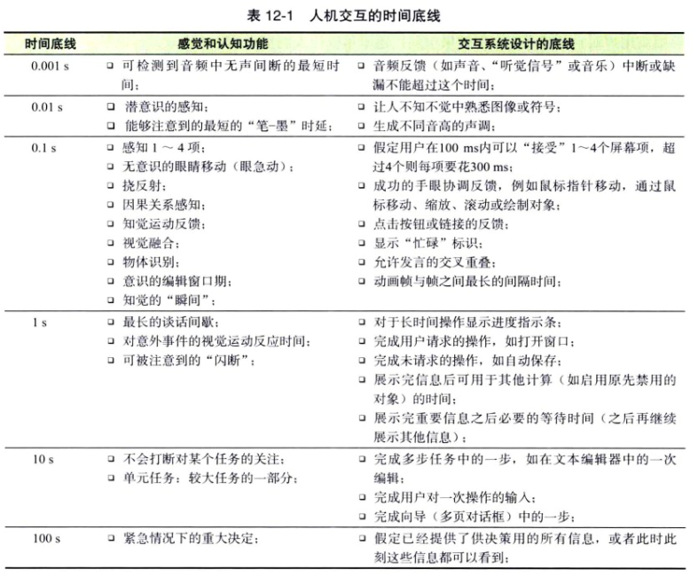

我们有时间要求¶
响应度的定义¶
响应度是以服从用户在时间上的要求及用户满意度来衡量的（用户在一个站点中取得的成就越多，就会认为站点的速度越快，和实际速度不直接相关）。
一个交互系统的响应度，能否跟上用户，及时告知他们当前状态，而不让他们无故等待，是决定用户满意度的最重要因素，没有之一。
高响应度的交互系统不一定是高性能的。高响应度系统对用户的操作和执行情况提供反馈，并根据人类感觉、运动和认知的时长来安排反馈的优先顺序，具体来说：
- 立刻告知已经接收到你的输入
- 对操作需要多长时间完成提供一定的指示
- 在等待时间允许你去做其他事情
- 能够智能地管理事件队列
- 将系统内部管理和低优先级的任务放在后台运行
- 对最常见的用户请求做出预期
人类大脑的许多时间常量¶
| 感觉与认知功能 | 时长 |
|---|---|
| 声音中我们所能察觉到的最短沉默间隔 | 1 ms（0.001s） |
| 听觉神经细胞（大脑里最快的神经元）的峰电位之间最短的时间间隔 | 毫秒级（0.002s） |
| 可见且能对我们产生影响（或许是无意识的）的视觉刺激的最短时长 | 5ms(0.005s) |
| 用墨水笔书写时可发现墨水延迟的最小时间间隔 | 10ms(0.01s) |
| 连续声波之间通过听觉整合形成一个音调允许的最长间隔 | 20ms(0.02s) |
| 连续图像之间可形成视觉整合的最长间隔 | 50ms(0.05s) |
| 挠反射的速度（对危险的非自主的运动反应） | 80ms(0.08s) |
| 一个视觉事件与我们对它完整感知之间的时间差 | 100ms(0.1s) |
| 眼跳（非自主的眼球运动）的时长，此期间视觉受到抑制 | 100ms(0.1s) |
| 可使我们感觉一个事件产生另一个事件的连续事件之间最长的时间间隔（感知因果的最长时限：如果系统延迟超过0.14s才对你的操作作出反应，你不会觉得这个反应是你的操作造成的） | 140ms(0.14s) |
| 一位熟练的阅读者的大脑领会一个显示的单词需要的时间 | 150ms(0.15s) |
| 从感觉上判断视野中4~5个物体的时间 | 200ms(0.2s,每个物体50ms) |
| 事件进入意识的编辑“窗口” | 200ms(0.2s) |
| 辨认出（说出）被展示的物品 | 250ms(0.25s) |
| 在有超过4件物品的场景里默数出这些物品所需的时间 | 300ms(0.3s) |
| 识别了一个事物之后的注意力暂失（对其他事物失去注意） | 500ms(0.5s) |
| 视觉-运动反应时间（对非预期事件的有目的的反应） | 700ms(0.7s) |
| 人们对话中交换发言时的最长沉默间隔 | 大约1s |
| 不受干扰地执行单一（单位）操作的时长 | 6~30s |
| 在紧急情况下做一个关键性决定（比如医疗应急分配）所需时间 | 1~5min |
| 做一个重要的购买决定（比如买一辆车）的时间间隔 | 1~10天 |
| 选择一个一辈子的职业所需的时间 | 20年 |
交互系统设计中需要注意的几个时限：
- 0.001s(1ms):能够被察觉的最短沉默间隔
- 0.01s(10ms):前意识（潜意识）的视觉感知，最短可察觉到的笔墨延迟，音频融合
- 0.1s(100ms)：感知1~4个物体，非自发眼动（眼跳），因果关系的感知，感知-运动反馈，视觉融合，挠反射，辨别物体，自主意识的编辑“窗口”，自主意识到的“那一刻”
- 1.0s：谈话中的平均间隔，有准备的视觉-运动反应时间，注意力暂失
- 10s：单位任务、在任务上不可打断的注意力，一个复杂任务的一步
- 100s(1.6min)：紧急情况下做关键决定的时间
为满足实时交互的设计¶
要让用户觉得响应度高，交互系统应遵循的准则：
- 立刻（0.1s）告知收到用户的动作，及时回应用户需要时间，保持用户对因果关系的感知
- 让用户知道软件是否在忙
- 在等待一个功能完成的同时允许用户做别的事情
- 动画要做到平滑和清晰
- 让用户能够终止（取消）他们不想要的长时间的操作
- 让用户知道长时间的操作需要多长时间
- 尽可能让用户来掌控自己的工作节奏

达到高响应交互系统的另一些原则¶
使用忙碌标识¶
软件应为任何在运行时会阻止用户继续下一步的操作显示一个忙碌标识，即使这个操作通常能够很快执行完。
使用用户进度指示¶
处理时间超过1s的操作都应显示进度指示
- 显示还剩下多少工作，不是完成了多少
- 显示总进度，而不是当前步骤的进度
- 显示一个操作已经完成了的百分比，从1%开始，而不是0%。
- 类似的，在操作结束时，只要非常短暂地显示100%
- 进度的显示应是平缓的、线性的而不是不稳定爆发式的
- 用人们平时使用的，而不是电脑用的精度
单位任务内的延迟比单位任务之间的延迟麻烦¶
在完成一项单位任务后，移向下一个任务前，人们会放松一下，再把下一个任务所需的信息放进记忆或者视野里
一个在主要单位工作结束后的延迟并不会困扰用户或者对性能有负责影响，然而，在较大单位任务中的小步骤之间的延迟可能会让用户忘记计划中的下一个步骤。 底线是————如果一个系统有延迟，应把延迟放在单位任务之间，而不是之内。
先显示重要的信息¶
分段加载，用户更喜欢看到逐步深入的结果，逐步显示的结果可以让用户提前计划下一个单元任务。
在手眼协调的任务中伪装重量级计算¶
如果你的系统无法足够快地更新显示来达到手眼协调的时限（0.1s），可以先提供一个轻量级的模拟反馈，直到目标达到再执行真实的操作。
提前处理¶
利用等待用户输入的时间提前处理用户想要做的事情
根据用户输入的优先级而不是输入的顺序来处理¶
盲目地按照请求的顺序去执行任务可能会浪费时间和资源
监控时间承诺，降低工作质量来保证不落后¶
交互系统应能够衡量它是否达到实时的时限标准，如果没有达到或者确定发现存在错过期限的风险，可以采用更简单、更快的方法，通常是以临时降低输出质量为解决方法。例如C4D里为了响应速度而降低了预览画质。
提供及时反馈，即使网页也应如此¶
- 尽可能减小图片的尺寸和数量
- 提供快速显示的缩略图或者概略图，想办法只在需要的时候才显示细节
- 当数据量太大或者一次显示太消耗时间时，让系统提供一个所有数据的概览，并允许用户深入到他们南非要的数据的具体部分和细节层面
- 使用层叠样式表（CSS）来对页面渲染和布局，不要使用展示性的HTML、框架或者表格
- 使用浏览器内置组件，比如错误提示框，而不是用HTML来创建自己的提示框（这一点有待讨论）
- 下载小应用程序和脚本到浏览器，使用Ajax方法（用JavaScript执行异步网络请求）
实现高响应度是重要的¶
- 与性能不同，响应度的问题不是仅仅靠优化性能或者使用更快的硬件就能够解决的
- 响应度是设计问题，不仅仅是实现问题